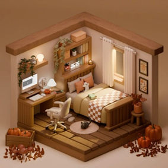
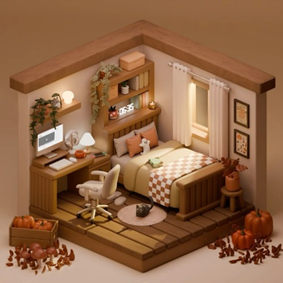
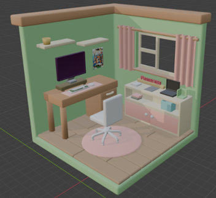
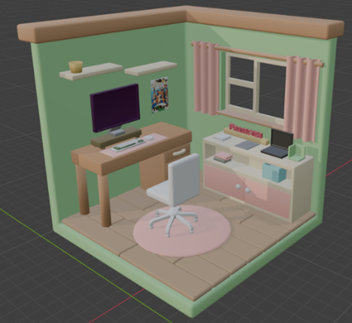

Project X
Coach:
Guido Segers
Project overview:
In dit persoonlijke project maak ik een interactieve 3D-weergave van mijn kamer, een zogenaamd roomfolio. Het wordt een online portfolio waarin gebruikers vrij kunnen navigeren en objecten kunnen aanklikken of animeren. Zo toon ik mijn vaardigheden in 3D-modellering, animatie en webontwikkeling. In het roomfolio presenteer ik ook mijn webprojecten van dit semester, met als doel dit later uit te breiden met meer werk en interactieve functies.
Inspiratie
Hier vertel ik over de inspiratie achter mijn portfolio-ontwerp en hoe ik tot mijn 3D-model kwam.
Toen ik op zoek was naar inspiratie voor mijn portfolio, ontdekte ik via Awwwards een indrukwekkende 3D-website: Sooah's Room-folio . De persoonlijke en schattige stijl en de interactieve elementen spraken mij erg aan. De tutorial op de site hielp mij bij het plannen en maken van mijn eigen 3D-model. Hiernaast in de afbeelding zie je hoe Sooah's room-folio design eruit ziet.
Onderzoek
Hier vertel ik over onderzoek naar methodes die ik moest gebruiken
Design
Het design wou ik helemaal zelf maken met behulp van Blender. Ik begon met inspiratie zoeken op Pinterest
Inspiratie design


 

Schetsen
Hier leg ik mijn proces uit van eerste schets tot het vereenvoudigen van het ontwerp in Blender.

Het bouwen in Blender bleek lastiger dan gedacht. Na overleg met mijn coach besloot ik het ontwerp te vereenvoudigen en me te focussen op het interactieve prototype in plaats van het perfecte design.
Versie 1
Ik heb de grootste voorwerpen gemaakt. Alle decoratieve voorwerpen wil ik als laatste maken. Het design staat hieronder. Links zonder kleur en rechts met kleur.


Ik ben vooral gaan experimenteren met het maken van voorwerpen en het ontdekken van de tools. Als eerste maakte ik een kast, met simpele vormen die makkelijk te bouwen waren. Ik vind dat het er tot nu toe goed uitziet en ik ben best trots dat ik dit zelf heb gemaakt. Toch is dit niet de stijl waar ik voor wil gaan. Deze versie lijkt vrij realistisch, terwijl ik juist iets ‘schattigers’ wil maken. Ik heb ChatGPT gevraagd waarom mijn ontwerp niet zo schattig oogt als mijn inspiratie. De tip was dat mijn ontwerp realistischer is en dat de inspiratie vooral schattig lijkt door ronde vormen en onrealistische verhoudingen. Dat ga ik in mijn volgende versie proberen toe te passen.
Versie 2
Ik wou mijn design verbeteren door meer gebruik maken van onrealische meubels en objecten. Ik begon bijna helemaal opnieuw met het design. Zo ben ik weer begonnen met een schets te maken in Blender. Hieronder staat de nieuwe schets.
Zoals je kun zien heb ik de vormen groter gemaakt. Ook heb ik het raam veranderd dat die wat groter is
Uitgewerkte schets
Ik merkte al snel dat ik steeds beter met Blender kon werken. Een object maken koste steeds minder tijd. Doordat het maken sneller ging had ik meer tijd om meer objecten te maken en ze mooier te maken. De versie hieronder is nog niet mijn complete ontwerp van versie 2. Ik ben nog bezig met de stoel verder te ontwerpen. Het ontwerp staat hieronder.
 

Nadat ik de stoel heb aangepast ga ik het exporteren en in three.js zetten. Zodat ik kan beginnen aan de functies. Mocht ik daarna nog tijd over hebben ga ik meer decoratie maken.
Coderen
Hier leg ik mijn proces uit van het coderen gedeelte.
Voorbereiding
Voor de voorbereiding ben ik gaan oefenen met Three.js, Blender object exporteren en importeren, animeren en online zetten
Dit heb ik gedaan doormiddel van Maikels bootcamp te volgen en de challenge die daarop volgde. Hierop heb ik feedback van Maikel gevraagd en dit heeft me goed geholpen met de voorbereiding op het coderen. Dit onderzoek is beschikbaar in een document. Klik op de onderstaande knop om het te bekijken.
Eindproduct
Bekijk hieronder de showcasevideo van de laatste versie die ik heb opgeleverd voor de deadline van mijn portfolio.
Ontdek de 3D-website zelf via de knop hieronder. Benieuwd of er iets is veranderd? Kijk gerust rond!
Live website